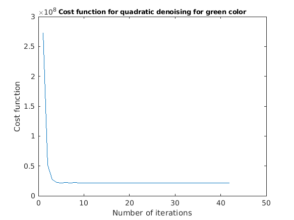

close all;
clear all;
fprintf(['\n \n \n We are separating the components r, g, b and running the code on each of them separately because ' ...
' \n we cant assume them dependent on each other, and finally combining them to obtain the final images']);
noiseless = double(imread("histology_noiseless.png"));
noiseless1=noiseless(:, :, 1);
noiseless2=noiseless(:, :, 2);
noiseless3=noiseless(:, :, 3);
Y = double(imread("histology_noisy.png"));
Y1=Y(:, :, 1);
Y2=Y(:, :, 2);
Y3=Y(:, :, 3);
o1=rrmse(noiseless1, Y1);
o2=rrmse(noiseless2, Y2);
o3=rrmse(noiseless3, Y3);
[Y11, f1] = graddesc(Y1, @quadratic, 0.8, 1);
[Y111, a1] = graddesc(Y1, @quadratic, 0.64, 1);
[Y112, a2] = graddesc(Y1, @quadratic, 0.96, 1);
[Y113, a3] = graddesc(Y1, @quadratic, 0.8, 1.2);
[Y114, a4] = graddesc(Y1, @quadratic, 0.8, 0.8);
rq=rrmse(Y11, noiseless1);
rq2=rrmse(Y111, noiseless1);
rq3=rrmse(Y112, noiseless1);
rq4=rrmse(Y113, noiseless1);
rq5=rrmse(Y114, noiseless1);
[Y12, f2] = graddesc(Y1, @huber, 0.9, 8);
[Y121, b1] = graddesc(Y1, @huber, 0.72, 8);
[Y122, b2] = graddesc(Y1, @huber, 0.98, 8);
[Y123, b3] = graddesc(Y1, @huber, 0.9, 6.4);
[Y124, b4] = graddesc(Y1, @huber, 0.9, 9.6);
rh=rrmse(Y12, noiseless1);
rh2=rrmse(Y121, noiseless1);
rh3=rrmse(Y122, noiseless1);
rh4=rrmse(Y123, noiseless1);
rh5=rrmse(Y124, noiseless1);
[Y13, f3] = graddesc(Y1, @thirdfunc, 0.9, 11);
[Y131, c1] = graddesc(Y1, @thirdfunc, 0.72, 11);
[Y132, c2] = graddesc(Y1, @thirdfunc, 0.98, 11);
[Y133, c3] = graddesc(Y1, @thirdfunc, 0.9, 8.8);
[Y134, c4] = graddesc(Y1, @thirdfunc, 0.9, 13.2);
rt=rrmse(Y13, noiseless1);
rt2=rrmse(Y131, noiseless1);
rt3=rrmse(Y132, noiseless1);
rt4=rrmse(Y133, noiseless1);
rt5=rrmse(Y134, noiseless1);
[Y21, f4] = graddesc(Y2, @quadratic, 0.7, 1);
[Y211, d1] = graddesc(Y2, @quadratic, 0.56, 1);
[Y212, d2] = graddesc(Y2, @quadratic, 0.84, 1);
[Y213, d3] = graddesc(Y2, @quadratic, 0.7, 0.8);
[Y214, d4] = graddesc(Y2, @quadratic, 0.7, 1.2);
gq=rrmse(Y21, noiseless2);
gq2=rrmse(Y211, noiseless2);
gq3=rrmse(Y212, noiseless2);
gq4=rrmse(Y213, noiseless2);
gq5=rrmse(Y214, noiseless2);
[Y22, f5] = graddesc(Y2, @huber, 0.8, 9);
[Y221, e1] = graddesc(Y2, @huber, 0.64, 9);
[Y222, e2] = graddesc(Y2, @huber, 0.96, 9);
[Y223, e3] = graddesc(Y2, @huber, 0.8, 7.2);
[Y224, e4] = graddesc(Y2, @huber, 0.8, 10.8);
gh=rrmse(Y22, noiseless2);
gh2=rrmse(Y221, noiseless2);
gh3=rrmse(Y222, noiseless2);
gh4=rrmse(Y223, noiseless2);
gh5=rrmse(Y224, noiseless2);
[Y23, f6] = graddesc(Y2, @thirdfunc, 0.9, 7);
[Y231, g1] = graddesc(Y2, @thirdfunc, 0.72, 7);
[Y232, g2] = graddesc(Y2, @thirdfunc, 0.98, 7);
[Y233, g3] = graddesc(Y2, @thirdfunc, 0.9, 8.4);
[Y234, g4] = graddesc(Y2, @thirdfunc, 0.9, 5.6);
gt=rrmse(Y23, noiseless2);
gt2=rrmse(Y231, noiseless2);
gt3=rrmse(Y232, noiseless2);
gt4=rrmse(Y233, noiseless2);
gt5=rrmse(Y234, noiseless2);
[Y31, f7] = graddesc(Y3, @quadratic, 0.8, 1);
[Y311, h1] = graddesc(Y3, @quadratic, 0.64, 1);
[Y312, h2] = graddesc(Y3, @quadratic, 0.96, 1);
[Y313, h3] = graddesc(Y3, @quadratic, 0.8, 0.8);
[Y314, h4] = graddesc(Y3, @quadratic, 0.8, 1.2);
bq=rrmse(Y31, noiseless3);
bq2=rrmse(Y311, noiseless3);
bq3=rrmse(Y312, noiseless3);
bq4=rrmse(Y313, noiseless3);
bq5=rrmse(Y314, noiseless3);
[Y32, f8] = graddesc(Y3, @huber, 0.9, 9);
[Y321, i1] = graddesc(Y3, @huber, 0.72, 9);
[Y322, i2] = graddesc(Y3, @huber, 0.98, 9);
[Y323, i3] = graddesc(Y3, @huber, 0.9, 7.2);
[Y324, i4] = graddesc(Y3, @huber, 0.9, 10.8);
bh=rrmse(Y32, noiseless3);
bh2=rrmse(Y321, noiseless3);
bh3=rrmse(Y322, noiseless3);
bh4=rrmse(Y323, noiseless3);
bh5=rrmse(Y324, noiseless3);
[Y33, f9] = graddesc(Y3, @thirdfunc, 0.9, 17);
[Y331, j1] = graddesc(Y3, @thirdfunc, 0.72, 17);
[Y332, j2] = graddesc(Y3, @thirdfunc, 0.98, 17);
[Y333, j3] = graddesc(Y3, @thirdfunc, 0.9, 13.6);
[Y334, j4] = graddesc(Y3, @thirdfunc, 0.9, 20.4);
bt=rrmse(Y33, noiseless3);
bt2=rrmse(Y331, noiseless3);
bt3=rrmse(Y332, noiseless3);
bt4=rrmse(Y333, noiseless3);
bt5=rrmse(Y334, noiseless3);
Yq(:, :, 1) = Y11;
Yq(:, :, 2) = Y21;
Yq(:, :, 3) = Y31;
Yh(:, :, 1) = Y12;
Yh(:, :, 2) = Y22;
Yh(:, :, 3) = Y32;
Yt(:, :, 1) = Y13;
Yt(:, :, 2) = Y23;
Yt(:, :, 3) = Y33;
mat=[o1, o2, o3;
rq, gq, bq;
rh, gh, bh;
rt, gt, bt];
mat2=[o1, o2, o3;
rq2, gq2, bq2;
rh2, gh2, bh2;
rt2, gt2, bt2];
mat3=[o1, o2, o3;
rq3, gq3, bq3;
rh3, gh3, bh3;
rt3, gt3, bt3];
mat4=[o1, o2, o3;
rq4, gq4, bq4;
rh4, gh4, bh4;
rt4, gt4, bt4];
mat5=[o1, o2, o3;
rq5, gq5, bq5;
rh5, gh5, bh5;
rt5, gt5, bt5];
fprintf('\n \n \n Denoising Red Color Using Quadratic Prior');
fprintf(strcat('\n Optimal Alpha = ',num2str(0.8)));
fprintf(strcat('\n RRMSE(alpha) = ',num2str(rq)));
fprintf(strcat('\n RRMSE(alpha*0.8) = ', num2str(rq2)));
fprintf(strcat('\n RRMSE(alpha*1.2) = ', num2str(rq3)));
fprintf('\n \n \n Denoising Green Color Using Quadratic Prior');
fprintf(strcat('\n Optimal Alpha = ',num2str(0.7)));
fprintf(strcat('\n RRMSE(alpha) = ',num2str(gq)));
fprintf(strcat('\n RRMSE(alpha*0.8) = ', num2str(gq2)));
fprintf(strcat('\n RRMSE(alpha*1.2) = ', num2str(gq3)));
fprintf('\n \n \n Denoising Blue Color Using Quadratic Prior');
fprintf(strcat('\n Optimal Alpha = ',num2str(0.9)));
fprintf(strcat('\n RRMSE(alpha) = ',num2str(bq)));
fprintf(strcat('\n RRMSE(alpha*0.8) = ', num2str(bq2)));
fprintf(strcat('\n RRMSE(alpha*1.2) = ', num2str(bq3)));
fprintf('\n \n Denoising Red Color Using Huber Prior');
fprintf(strcat('\n Optimal Alpha = ',num2str(0.9)));
fprintf(strcat('\n Optimal Gamma = ',num2str(8)));
fprintf(strcat('\n RRMSE(alpha,Gamma) = ',num2str(rh)));
fprintf(strcat('\n RRMSE(alpha*0.8,Gamma) = ', num2str(rh2)));
fprintf(strcat('\n RRMSE(alpha*1.2,Gamma) = ', num2str(rh3)));
fprintf(strcat('\n RRMSE(alpha,0.8*Gamma) = ', num2str(rh4)));
fprintf(strcat('\n RRMSE(alpha,1.2*Gamma) = ', num2str(rh5)));
fprintf('\n \n Denoising Green Color Using Huber Prior');
fprintf(strcat('\n Optimal Alpha = ',num2str(0.8)));
fprintf(strcat('\n Optimal Gamma = ',num2str(9)));
fprintf(strcat('\n RRMSE(alpha,Gamma) = ',num2str(gh)));
fprintf(strcat('\n RRMSE(alpha*0.8,Gamma) = ', num2str(gh2)));
fprintf(strcat('\n RRMSE(alpha*1.2,Gamma) = ', num2str(gh3)));
fprintf(strcat('\n RRMSE(alpha,0.8*Gamma) = ', num2str(gh4)));
fprintf(strcat('\n RRMSE(alpha,1.2*Gamma) = ', num2str(gh5)));
fprintf('\n \n Denoising Blue Color Using Huber Prior');
fprintf(strcat('\n Optimal Alpha = ',num2str(0.9)));
fprintf(strcat('\n Optimal Gamma = ',num2str(9)));
fprintf(strcat('\n RRMSE(alpha,Gamma) = ',num2str(bh)));
fprintf(strcat('\n RRMSE(alpha*0.8,Gamma) = ', num2str(bh2)));
fprintf(strcat('\n RRMSE(alpha*1.2,Gamma) = ', num2str(bh3)));
fprintf(strcat('\n RRMSE(alpha,0.8*Gamma) = ', num2str(bh4)));
fprintf(strcat('\n RRMSE(alpha,1.2*Gamma) = ', num2str(bh5)));
fprintf('\n \n Denoising Red Color Using thirdfunc Prior');
fprintf(strcat('\n Optimal Alpha = ',num2str(0.9)));
fprintf(strcat('\n Optimal Gamma = ',num2str(11)));
fprintf(strcat('\n RRMSE(alpha,Gamma) = ',num2str(bh)));
fprintf(strcat('\n RRMSE(alpha*0.8,Gamma) = ', num2str(bh2)));
fprintf(strcat('\n RRMSE(alpha*1.2,Gamma) = ', num2str(bh3)));
fprintf(strcat('\n RRMSE(alpha,0.8*Gamma) = ', num2str(bh4)));
fprintf(strcat('\n RRMSE(alpha,1.2*Gamma) = ', num2str(bh5)));
fprintf('\n \n Denoising Green Color Using thirdfunc Prior');
fprintf(strcat('\n Optimal Alpha = ',num2str(0.9)));
fprintf(strcat('\n Optimal Gamma = ',num2str(7)));
fprintf(strcat('\n RRMSE(alpha,Gamma) = ',num2str(bh)));
fprintf(strcat('\n RRMSE(alpha*0.8,Gamma) = ', num2str(bh2)));
fprintf(strcat('\n RRMSE(alpha*1.2,Gamma) = ', num2str(bh3)));
fprintf(strcat('\n RRMSE(alpha,0.8*Gamma) = ', num2str(bh4)));
fprintf(strcat('\n RRMSE(alpha,1.2*Gamma) = ', num2str(bh5)));
fprintf('\n \n Denoising Blue Color Using thirdfunc Prior');
fprintf(strcat('\n Optimal Alpha = ',num2str(0.9)));
fprintf(strcat('\n Optimal Gamma = ',num2str(17)));
fprintf(strcat('\n RRMSE(alpha,Gamma) = ',num2str(bh)));
fprintf(strcat('\n RRMSE(alpha*0.8,Gamma) = ', num2str(bh2)));
fprintf(strcat('\n RRMSE(alpha*1.2,Gamma) = ', num2str(bh3)));
fprintf(strcat('\n RRMSE(alpha,0.8*Gamma) = ', num2str(bh4)));
fprintf(strcat('\n RRMSE(alpha,1.2*Gamma) = ', num2str(bh5)));
myNumOfColors = 200;
myColorScale = [ [0:1/(myNumOfColors-1):1]' , [0:1/(myNumOfColors-1):1]' , [0:1/(myNumOfColors-1):1]' ];
imagesc (single (Y/255));
colormap (myColorScale);
colormap jet;
daspect ([1 1 1]);
axis tight;
colorbar
figure()
myColorScale = [ [0:1/(myNumOfColors-1):1]' , [0:1/(myNumOfColors-1):1]' , [0:1/(myNumOfColors-1):1]' ];
imagesc (single (noiseless/255));
colormap (myColorScale);
colormap jet;
daspect ([1 1 1]);
axis tight;
colorbar
figure()
myColorScale = [ [0:1/(myNumOfColors-1):1]' , [0:1/(myNumOfColors-1):1]' , [0:1/(myNumOfColors-1):1]' ];
imagesc (single (Yq/255));
colormap (myColorScale);
colormap jet;
daspect ([1 1 1]);
axis tight;
colorbar
figure()
myColorScale = [ [0:1/(myNumOfColors-1):1]' , [0:1/(myNumOfColors-1):1]' , [0:1/(myNumOfColors-1):1]' ];
imagesc (single (Yh/255));
colormap (myColorScale);
colormap jet;
daspect ([1 1 1]);
axis tight;
colorbar
figure()
myColorScale = [ [0:1/(myNumOfColors-1):1]' , [0:1/(myNumOfColors-1):1]' , [0:1/(myNumOfColors-1):1]' ];
imagesc (single (Yt/255));
colormap (myColorScale);
colormap jet;
daspect ([1 1 1]);
axis tight;
colorbar
figure(); plot(f1);
title('Cost function for quadratic denoising for red color','FontSize', 9);
xlabel('Number of iterations'); ylabel('Cost function');
figure(); plot(f2);
title('Cost function for huber denoising for red color','FontSize', 9);
xlabel('Number of iterations'); ylabel('Cost function');
figure(); plot(f3);
title('Cost function for thirdfunc denoising for red color','FontSize', 9);
xlabel('Number of iterations'); ylabel('Cost function');
figure(); plot(f4);
title('Cost function for quadratic denoising for green color','FontSize', 9);
xlabel('Number of iterations'); ylabel('Cost function');
figure(); plot(f5);
title('Cost function for huber denoising for green color','FontSize', 9);
xlabel('Number of iterations'); ylabel('Cost function');
figure(); plot(f6);
title('Cost function for thirdfunc denoising for green color','FontSize', 9);
xlabel('Number of iterations'); ylabel('Cost function');
figure(); plot(f7);
title('Cost function for quadratic denoising for blue color','FontSize', 9);
xlabel('Number of iterations'); ylabel('Cost function');
figure(); plot(f8);
title('Cost function for huber denoising for blue color','FontSize', 9);
xlabel('Number of iterations'); ylabel('Cost function');
figure(); plot(f9);
title('Cost function for thirdfunc denoising for blue color','FontSize', 9);
xlabel('Number of iterations'); ylabel('Cost function');
We are separating the components r, g, b and running the code on each of them separately because
we cant assume them dependent on each other, and finally combining them to obtain the final images
Denoising Red Color Using Quadratic Prior
Optimal Alpha =0.8
RRMSE(alpha) =0.046625
RRMSE(alpha*0.8) =0.05403
RRMSE(alpha*1.2) =0.087327
Denoising Green Color Using Quadratic Prior
Optimal Alpha =0.7
RRMSE(alpha) =0.066439
RRMSE(alpha*0.8) =0.074581
RRMSE(alpha*1.2) =0.094062
Denoising Blue Color Using Quadratic Prior
Optimal Alpha =0.9
RRMSE(alpha) =0.043691
RRMSE(alpha*0.8) =0.055392
RRMSE(alpha*1.2) =0.068817
Denoising Red Color Using Huber Prior
Optimal Alpha =0.9
Optimal Gamma =8
RRMSE(alpha,Gamma) =0.046447
RRMSE(alpha*0.8,Gamma) =0.074765
RRMSE(alpha*1.2,Gamma) =0.087899
RRMSE(alpha,0.8*Gamma) =0.045754
RRMSE(alpha,1.2*Gamma) =0.047218
Denoising Green Color Using Huber Prior
Optimal Alpha =0.8
Optimal Gamma =9
RRMSE(alpha,Gamma) =0.072755
RRMSE(alpha*0.8,Gamma) =0.10494
RRMSE(alpha*1.2,Gamma) =0.13203
RRMSE(alpha,0.8*Gamma) =0.077144
RRMSE(alpha,1.2*Gamma) =0.07021
Denoising Blue Color Using Huber Prior
Optimal Alpha =0.9
Optimal Gamma =9
RRMSE(alpha,Gamma) =0.043387
RRMSE(alpha*0.8,Gamma) =0.073104
RRMSE(alpha*1.2,Gamma) =0.070257
RRMSE(alpha,0.8*Gamma) =0.043582
RRMSE(alpha,1.2*Gamma) =0.043463
Denoising Red Color Using thirdfunc Prior
Optimal Alpha =0.9
Optimal Gamma =11
RRMSE(alpha,Gamma) =0.043387
RRMSE(alpha*0.8,Gamma) =0.073104
RRMSE(alpha*1.2,Gamma) =0.070257
RRMSE(alpha,0.8*Gamma) =0.043582
RRMSE(alpha,1.2*Gamma) =0.043463
Denoising Green Color Using thirdfunc Prior
Optimal Alpha =0.9
Optimal Gamma =7
RRMSE(alpha,Gamma) =0.043387
RRMSE(alpha*0.8,Gamma) =0.073104
RRMSE(alpha*1.2,Gamma) =0.070257
RRMSE(alpha,0.8*Gamma) =0.043582
RRMSE(alpha,1.2*Gamma) =0.043463
Denoising Blue Color Using thirdfunc Prior
Optimal Alpha =0.9
Optimal Gamma =17
RRMSE(alpha,Gamma) =0.043387
RRMSE(alpha*0.8,Gamma) =0.073104
RRMSE(alpha*1.2,Gamma) =0.070257
RRMSE(alpha,0.8*Gamma) =0.043582
RRMSE(alpha,1.2*Gamma) =0.043463
